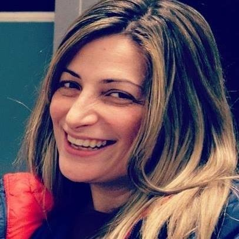

Biography
My name is Barbara Karakyriakou, and I am a data analyst,
with over 20 years of experience.
I have recently earned a Bachelor of Liberal Arts degree in Biology with minors in Mathematics and Computer Science
from Harvard Extension School.
For the academic years of 2018-2019 and 2019-2020, I was accepted and I have beeen taking classes at the Department of Biostatistics of
the Harvard Graduate School of Arts and Sciences.
My future goal is to pursue a graduate degree in Biostatistics and a career in Computational Biology and Bioinformatics.